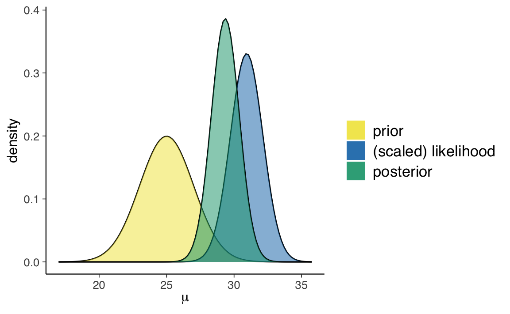
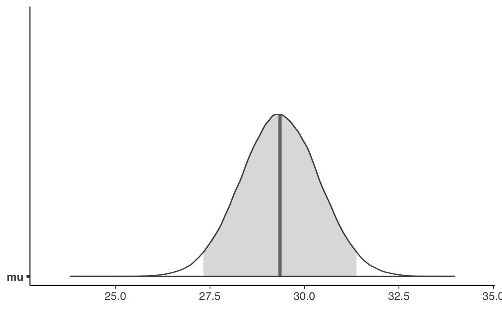
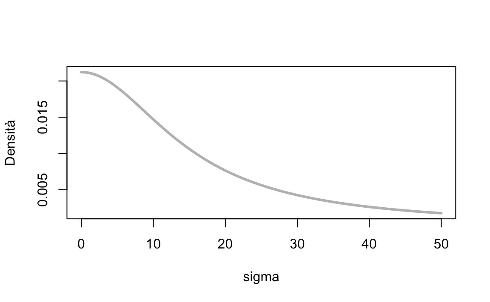
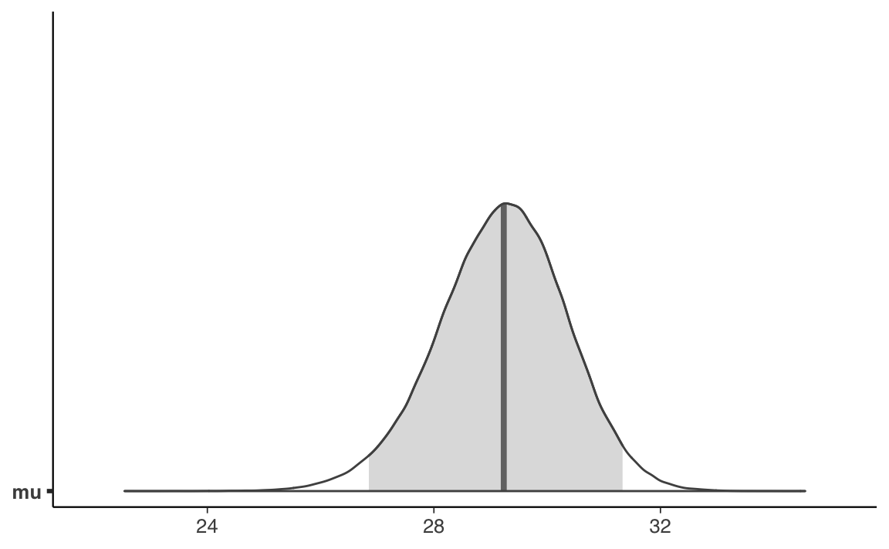

25 Inferenza sul parametro \(\mu\) (media di una v.c. Normale)
Esaminiamo ora in maggiore dettaglio un caso che abbiamo anticipato in precedenza, ovvero quello in cui disponiamo di un campione di dati a livello di scala a intervalli o rapporti e vogliamo fare inferenza sulla media della popolazione da cui il campione è stato estratto.
25.1 Caso Normale-Normale con varianza nota
Supponiamo che i dati \(y\) siano un campione casuale estratto da una popolazione che segue la legge Normale. Ciò significa che le osservazioni possono essere considerate come una sequenza di variabili casuali indipendenti e identicamente distribuite. Supponiamo che ciascuna v.c. segua la distribuzione Normale. Abbiamo dunque
\[ Y_1, \dots, Y_n \stackrel{iid}{\sim} \mathcal{N}(\mu, \sigma). \]
In precedenza abbiamo visto come, in tali circostanze, la verosimiglianza \(p(y \mid \mu, \sigma)\) sia Normale. Per fare inferenza sul parametro \(\mu\), facciamo due assunzioni: consideriamo \(\sigma\) nota e imponiamo su \(\mu\) una distribuzione a priori Normale. Questa situazione definisce lo schema coniugato Normale-Normale. Il caso Normale-Normale consente una derivazione analitica della distribuzione a posteriori \(p(\mu \mid y)\) (così come nel caso beta-binomiale era possibile una derivazione analitica della distribuzione a posteriori \(p(\theta \mid y)\)).
La trattazione matematica di una tale derivazione è piuttosto complessa e qui verrà solo accennata. Nel seguito, impareremo invece ad applicare la soluzione che viene ottenuta in tali circostanze; mostreremo inoltre come fare inferenza su \(\mu\) mediante i metodi MCMC.
25.2 Derivazione analitica della distribuzione a posteriori \(p(\mu \mid y)\)
Per \(\sigma^2\) nota, la famiglia della distribuzione Normale è coniugata a sé stessa: se la funzione di verosimiglianza è Normale, la scelta di una distribuzione a priori Normale per \(\mu\) assicura che anche la distribuzione a posteriori \(p(\mu \mid y)\) sia Normale.
Poniamoci dunque il problema di trovare \(p(\mu \mid y)\) nel caso di un campione casuale \(Y_1, \dots, Y_n \stackrel{iid}{\sim} \mathcal{N}(\mu, \sigma)\), supponendo \(\sigma\) perfettamente nota e imponendo su \(\mu\) una distribuzione a priori Normale. Ricordiamo che la densità gaussiana è
\[ p(y_i \mid \mu, \sigma) = \frac{1}{{\sigma \sqrt {2\pi}}}\exp\left\{{-\frac{(y_i - \mu)^2}{2\sigma^2}}\right\}. \]
Essendo le variabili i.i.d., possiamo scrivere la densità congiunta come il prodotto delle singole densità e quindi si ottiene
\[ p(y \mid \mu) = \, \prod_{i=1}^n p(y_i \mid \mu). \]
Una volta osservati i dati \(y\), la verosimiglianza diventa
\[ \begin{align} p(y \mid \mu) =& \, \prod_{i=1}^n p(y_i \mid \mu) = \notag\\ & \frac{1}{{\sigma \sqrt {2\pi}}}\exp\left\{{-\frac{(y_1 - \mu)^2}{2\sigma^2}}\right\} \times \notag\\ & \frac{1}{{\sigma \sqrt {2\pi}}}\exp\left\{{-\frac{(y_2 - \mu)^2}{2\sigma^2}}\right\} \times \notag\\ & \vdots \notag\\ & \frac{1}{{\sigma \sqrt {2\pi}}}\exp\left\{{-\frac{(y_n - \mu)^2}{2\sigma^2}}\right\}. \end{align} \]
Se la densità a priori \(p(\mu)\) è gaussiana, allora anche la densità a posteriori \(p(\mu \mid y)\) sarà gaussiana. Poniamo
\[ p(\mu) = \frac{1}{{\tau_0 \sqrt {2\pi}}}\exp\left\{{-\frac{(\mu - \mu_0)^2}{2\tau_0^2}}\right\}, \] {#eq:prior-mu-norm-norm}
ovvero imponiamo a \(\mu\) una distribuzione a priori gaussiana con media \(\mu_0\) e varianza \(\tau_0^2\). Ciò significa dire che, a priori, \(\mu_0\) rappresenta il valore più verosimile per \(\mu\), mentre \(\tau_0^2\) quantifica il grado della nostra incertezza rispetto a tale valore.
Svolgendo una serie di passaggi algebrici, si arriva alla distribuzione a posteriori
\[ p(\mu \mid y) = \frac{1}{{\tau_p \sqrt {2\pi}}}\exp\left\{{-\frac{(\mu - \mu_p)^2}{2\tau_p^2}}\right\}, \tag{25.1}\]
dove
\[ \mu_p = \frac{\frac{1}{\tau_0^2}\mu_0+ \frac{n}{\sigma^2}\bar{y}}{\frac {1}{\tau_0^2} + \frac{n}{\sigma^2}} \tag{25.2}\]
e
\[ \tau_p^2 = \frac{1}{\frac {1}{\tau_0^2}+ \frac{n}{\sigma^2}}. \tag{25.3}\]
Ciò significa che, se la distribuzione a priori \(p(\mu)\) è gaussiana, allora anche la distribuzione a posteriori \(p(\mu \mid y)\) sarà gaussiana con valore atteso \(\mu_p\) e varianza \(\tau_p^2\) date dalle espressioni precedenti.
In conclusione, il risultato trovato indica che:
- il valore atteso a posteriori è una media pesata fra il valore atteso a priori \(\mu_0\) e la media campionaria \(\bar{y}\); il peso della media campionaria è tanto maggiore tanto più è grande \(n\) (il numero di osservazioni) e \(\tau_0^2\) (l’incertezza iniziale);
- l’incertezza (varianza) a posteriori \(\tau_p^2\) è sempre più piccola dell’incertezza a priori \(\tau_0^2\) e diminuisce al crescere di \(n\).
Esercizio 25.1 Per esaminare un esempio pratico, consideriamo i 30 valori BDI-II dei soggetti clinici di Zetsche et al. (2019).
df <- data.frame(
y = c(
26.0, 35.0, 30, 25, 44, 30, 33, 43, 22, 43,
24, 19, 39, 31, 25, 28, 35, 30, 26, 31, 41,
36, 26, 35, 33, 28, 27, 34, 27, 22
)
)Supponiamo che la varianza \(\sigma^2\) della popolazione sia identica alla varianza del campione:
sigma <- sd(df$y)
sigma
#> [1] 6.606858Per fare un esempio, imponiamo su \(\mu\) una distribuzione a priori \(\mathcal{N}(25, 2)\). In tali circostanze, la distribuzione a posteriori del parametro \(\mu\) può essere determinata per via analitica e corrisponde ad una Normale di media e varianza definite dalle equazioni @ref(eq:post-norm-mup) e @ref(eq:post-norm-taup2). È possibile visualizzare tale distribuzione a posteriori usando la funzione plot_normal_normal() del pacchetto bayesrules.
bayesrules::plot_normal_normal(
mean = 25, # media della distribuzione a priori per mu
sd = 2, # sd della distribuzione a priori per mu
sigma = sd(df$y), # sd del campione
y_bar = mean(df$y), # media del campione
n = length(df$y) # ampiezza campionaria
)
La funzione bayesrules::summarize_normal_normal() fornisce una sintesi numerica della distribuzione a posteriori \(p(\mu \mid y, \sigma)\).
bayesrules::summarize_normal_normal(
mean = 25, # media della distribuzione a priori per mu
sd = 2, # sd della distribuzione a priori per mu
sigma= sd(df$y), # sd del campione
y_bar = mean(df$y), # media del campione
n = length(df$y) # ampiezza campionaria
)
#> model mean mode var sd
#> 1 prior 25.00000 25.00000 4.000000 2.000000
#> 2 posterior 29.35073 29.35073 1.066921 1.032919Verifichiamo i risultati forniti da bayesrules::summarize_normal_normal() applicando le formule @ref(eq:post-norm-mup) e @ref(eq:post-norm-taup2). Definiamo la funzione della media della distribuzione a posteriori di \(\mu\).
mu_post <- function(tau_0, mu_0, sigma, ybar, n) {
(1/tau_0^2 * mu_0 + n/sigma^2 * ybar) / (1/tau_0^2 + n/sigma^2)
}Troviamo la media a posteriori.
Definiamo una funzione per la deviazione standard della distribuzione a posteriori di \(\mu\).
tau_post <- function(tau_0, sigma, n) {
sqrt(1 / (1/tau_0^2 + n/sigma^2))
}Troviamo la deviazione standard a posteriori.
I risultati così trovati riproducono quelli forniti da bayesrules::summarize_normal_normal().
25.3 Il modello Normale con Stan
I priori coniugati Normali di una Normale non richiedono una approssimazione numerica ottenuta mediante metodi MCMC. Tuttavia, per fare un esercizio e per verificare che i risultati ottenuti mediante MCMC siano simili a quelli trovati per via analitica, ripetiamo l’esercizio precedente usando Stan.
25.3.1 Versione 1 (\(\sigma\) nota)
Come in precedenza, impongo su \(\mu\) una distribuzione a priori \(\mathcal{N}(25, 2)\) e considero noto il parametro \(\sigma = 6.606858\). Il modello dunque diventa il seguente.
\[ \begin{align} Y_i &\sim \mathcal{N}(\mu, \sigma) \notag\\ \mu &\sim \mathcal{N}(25, 2) \notag\\ \sigma &= 6.606858 \notag \end{align} \]
In base al modello definito sopra, la variabile casuale \(Y\) segue la distribuzione Normale di parametri \(\mu\) e \(\sigma\). Il parametro \(\mu\) è sconosciuto e abbiamo deciso di descrivere la nostra incertezza relativa ad esso mediante una distribuzione a priori Normale di media 25 e deviazione standard 2. Il parametro \(\sigma\) è invece assunto essere noto e uguale a 6.606858. Usando il linguaggio Stan specifico il modello come segue.
modelString = "
data {
int<lower=0> N;
real<lower=0> sigma;
vector[N] y;
}
parameters {
real mu;
}
model {
mu ~ normal(25, 2);
y ~ normal(mu, sigma);
}
"
writeLines(modelString, con = "code/normal_normal_1.stan")Sistemo i dati nel formato appropriato per Stan.
Leggo il file in cui ho salvato il codice Stan.
file <- file.path("code", "normal_normal_1.stan")Compilo il modello.
mod <- cmdstan_model(file)Eseguo il campionamento MCMC.
fit <- mod$sample(
data = dlist,
iter_sampling = 100000L,
iter_warmup = 2000L,
chains = 4L,
refresh = 0
)Una sintesi della distribuzione a posteriori dei parametri si ottiene nel modo seguente.
fit$summary(c("mu"))
#> # A tibble: 1 × 10
#> variable mean median sd mad q5 q95 rhat ess_bulk ess_tail
#> <chr> <dbl> <dbl> <dbl> <dbl> <dbl> <dbl> <dbl> <dbl> <dbl>
#> 1 mu 29.4 29.4 1.04 1.04 27.6 31.1 1.00 153786. 188314.Si noti che le stime ottenute sono molto vicine ai valori teorici attesi, ovvero \(\mu_p\) = 29.3527 contro un valore teorico di 29.35 e \(\tau_p\) = 1.033 contro un valore teorico di 1.03.
Qui sotto è fornita una rappresentazione grafica dell’intera distribuzione a posteriori del parametro \(\mu\).
stanfit <- rstan::read_stan_csv(fit$output_files())
mu_draws <- as.matrix(stanfit,pars ="mu")
mcmc_areas(mu_draws,prob = 0.95) 
Trovo l’intervallo di credibilità al 95%.
post <- fit$draws()
post_parms <- subset_draws(post, c("mu"))
posterior::summarise_draws(
post_parms,
~ quantile(.x, probs = c(0.025, 0.975))
)
#> # A tibble: 1 × 3
#> variable `2.5%` `97.5%`
#> <chr> <dbl> <dbl>
#> 1 mu 27.3 31.4Le stime così trovate sono molto simili ai quantili di ordine 0.025 e 0.975 della vera distribuzione a posteriori di \(\mu\).
25.3.2 Versione 2 (\(\sigma\) incognita)
È facile estendere il caso precedente alla situazione in cui il parametro \(\sigma\) è incognito. Se non conosciamo \(\sigma\), è necessario imporre su tale parametro una distribuzione a priori. Supponiamo di ipotizzare per \(\sigma\) una distribuzione a priori \(\mbox{Cauchy}(0, 15)\).
Mediante una \(\mbox{Cauchy}(0, 15)\) descrivo il grado di plausibilità soggettiva che attribuisco ai possibili valori (> 0) del parametro \(\sigma\). Ai valori prossimi allo 0 attribuisco la plausibilità maggiore; la plausibilità dei possibili valori \(\sigma\) diminuisce progressivamente quando ci si allontana dallo 0, come indicato dalla curva della figura seguente. Ritengo poco plausibili valori \(\sigma\) maggiori di 40, anche se non escludo completamente che \(\sigma\) possa assumere un valore di questo tipo.
curve(
dcauchy(x, location = 0, scale = 15),
from = 0, to = 50, col = 'gray', lwd = 3,
ylab = "Densità",
xlab = "sigma"
)
In questo secondo caso, più realistico, il modello diventa il seguente.
\[ \begin{align} Y_i &\sim \mathcal{N}(\mu, \sigma) \notag\\ \mu &\sim \mathcal{N}(25, 2) \notag\\ \sigma &\sim \mbox{Cauchy}(0, 15) \notag \end{align} \]
Il modello precedente è simile a quello esaminato in precedenza, eccetto che abbiamo quantificato la nostra incertezza relativa a \(\sigma\) (che è ignota) mediante una distribuzione a priori \(\mbox{Cauchy}(0, 15)\).
La procedura MCMC utilizzata da Stan è basata su un campionamento Monte Carlo Hamiltoniano che non richiede l’uso di distribuzioni a priori coniugate. Pertanto è possibile scegliere per i parametri una qualunque distribuzione a priori. Nel caso presente, appunto, per \(\sigma\) ho scelto una \(\mbox{Cauchy}(0, 15)\). Per un tale caso non è possibile ottenere la derivazione analitica della distribuzione a posteriori di \(\mu\). È dunque necessario procedere con il campionamento MCMC.
Scrivo il modello in linguaggio in Stan.
model_string_2 = "
data {
int<lower=0> N;
vector[N] y;
}
parameters {
real mu;
real<lower=0> sigma;
}
model {
mu ~ normal(25, 2);
sigma ~ cauchy(0, 15);
y ~ normal(mu, sigma);
}
"
writeLines(model_string_2, con = "code/normal_mod_2.stan")Creo l’oggetto di classe list che contiene i dati.
Leggo il file con il codice Stan del modello.
file2 <- file.path("code", "normal_mod_2.stan")Compilo il modello.
mod2 <- cmdstan_model(file2)Eseguo il campionamento MCMC.
fit2 <- mod2$sample(
data = dlist2,
iter_sampling = 50000L,
iter_warmup = 2000L,
chains = 4L,
refresh = 0
)In questo modo ottengo le seguenti stime a posteriori dei parametri.
fit2$summary(c("mu", "sigma"))
#> # A tibble: 2 × 10
#> variable mean median sd mad q5 q95 rhat ess_bulk ess_tail
#> <chr> <dbl> <dbl> <dbl> <dbl> <dbl> <dbl> <dbl> <dbl> <dbl>
#> 1 mu 29.2 29.2 1.14 1.12 27.3 31.0 1.00 129256. 114237.
#> 2 sigma 7.06 6.95 1.01 0.954 5.63 8.88 1.00 121123. 115765.Dopo avere trasformato l’oggetto fit2 nel formato stanfit, trovo l’intervallo di credibilità al 95%.
stanfit <- rstan::read_stan_csv(fit2$output_files())
out <- rstantools::posterior_interval(
as.matrix(stanfit),
prob = 0.95
)
out
#> 2.5% 97.5%
#> mu 26.851295 31.331500
#> sigma 5.418299 9.360616
#> lp__ -76.415107 -72.666800Come in precedenza, uso la funzione mcmc_areas() per creare una rappresentazione grafica della distribuzione a posteriori di \(\mu\).
mu_draws <- as.matrix(stanfit, pars ="mu")
mcmc_areas(mu_draws, prob = 0.95) 
Considerati i dati osservati e le mie ipotesi a priori sui parametri, posso dunque concludere, con un grado di certezza soggettiva del 95%, che la media della popolazione dei punteggi BDI-II dei pazienti clinici depressi è compresa nell’intervallo [26.85, 31.33].
Commenti e considerazioni finali
In questo capitolo abbiamo visto come calcolare l’intervallo di credibilità per la media di una v.c. Normale. La domanda più ovvia di analisi dei dati, dopo avere visto come trovare l’intervallo di credibilità per la media di un solo gruppo, riguarda il confronto tra le medie di due gruppi. Il confronto tra le medie di due gruppi può essere considerato come un caso particolare di un metodo più generale di analisi dei dati, chiamato analisi di regressione lineare. Prima di discutere il problema del confronto tra le medie di due gruppi è dunque necessario esaminare il modello statistico della regressione lineare.